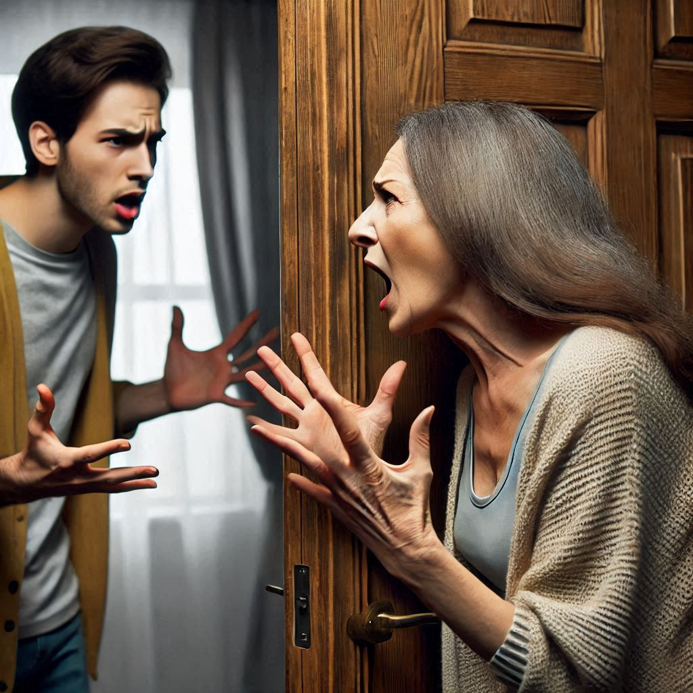

Семейная история: как справляться с конфликтами
— Только я в этом доме имею право говорить! Все остальные пусть молчат и слушают меня!
— Миша, нам нужно что-то придумать на эти выходные и уехать куда-нибудь! — сказала Анастасия нервным голосом, когда они оба готовились ко сну.
Миша в этот момент просто потянулся, чтобы выключить лампу с своей стороны кровати, и, прежде чем успел это сделать, повернулся к жене.
— Зачем? — удивленно спросил он. — Что с тобой? Ты вдруг что-то взволновалась? Это из-за визита твоих родителей?
— Вот именно! — ответила она. — Нам нужно что-то придумать и уехать куда-нибудь с детьми на несколько дней! Иначе я не выдержу, и скажу маме всё, что о ней думаю! Я уже устала терпеть её причуды!
— А ты не можешь просто поговорить с ней? Без криков и оскорблений, просто объяснить, что ты уже не пятнадцатилетняя девочка, а взрослая женщина? Мне кажется, что если просто сбежать, это всё только ухудшит ситуацию.
— Но ты прекрасно знаешь мою маму, Миша! И ты сам должен понимать, что для неё любой разговор — это проявление слабости! Я уже устала, что каждый раз, когда они приезжают с папой, всё должно быть так, как она хочет! — жаловалась Анастасия дрожащим голосом.
— Слушай, Настя, давай я с ней поговорю… Всё-таки, мне кажется, она не такая строгая со мной, как с тобой. Может быть, она меня выслушает, и все эти недоразумения между вами закончатся. В конце концов, она тоже человек!
— Моя мама? — Анастасия с сарказмом улыбнулась. — Человек? Она не человек, она всё, что угодно, но не человек! Иногда мне кажется, что она приезжает к нам каждые три месяца только для того, чтобы нас высосать! Она как энергетический вампир! Не зря же Саша от них сбежал и даже не хочет с ними разговаривать! И это при том, что с ним, если мне не изменяет память, она всегда была гораздо мягче, чем со мной!
— Ну, твой брат вообще отдельная история. Ты сама говорила, что родители его баловали с самого детства, всё ему разрешали, а вот тебя…
— Это не из-за этого, Миша! Ты же прекрасно помнишь, как мы с ним ладили! Мы друг друга просто ненавидели! А теперь он сам мне звонит, приезжает в гости, и мы начали общаться как брат и сестра! Когда мы говорили о том, почему мы раньше не могли понять друг друга, пришли к довольно интересному выводу.
— И какой это вывод? — спросил Миша.
— Всё очень просто, Миша! Моих родителей нас сильно сталкивали друг с другом! Ему говорили, что я плохая дочь, а он — единственный нормальный ребёнок в семье, а мне — говорили то же самое о нём! Только ему позволялось всё, а мне, как всегда, приходилось быть как бы изгоем! А когда я в конце концов сбежала, когда встретила тебя, они всю свою злость выместили на нём! Вот такие они, мои родители! Вот поэтому он тоже ушёл! И не только не хочет к ним возвращаться, но и не хочет даже по телефону с ними разговаривать! Он сказал, что это вампиры, которые высосали всю его энергию за годы, пока, в конце концов, не отправили его в армию!
— Ммм… — всё, что сказал Миша.
— Вот-вот! — подтвердила Анастасия. — И поэтому я предлагаю просто отменить этот визит, поехать куда-нибудь, чтобы мама, особенно, не устроила тут праздник за наш счёт, или, точнее, за мой счёт!
Миша ещё несколько минут лежал и думал о том, что его жена только что рассказала. Конечно, он не хотел воспринимать всё сказанное ею как абсолютно правду, но тот факт, что Светлана Викторовна, мама Анастасии, всегда провоцировала его жену во время визитов, был неоспорим. Не менее важным был и роль её отца, Игоря Семёновича. Он тоже мог подливать масло в огонь незаметно, и вся ситуация могла измениться в мгновение ока.
— А ты что молчишь? — спросила Анастасия у мужа. — О чём ты думаешь?
— Думаю, что бы придумать, чтобы вы с ней помирились и не причиняли друг другу вреда. — ответил Миша.
— И? Уже что-то придумал?
— Пока нет. — покачал головой Миша. — Но сбегать, как ты предложила, тоже не вариант. Лучше отвезём детей к моим родителям на эти выходные. А с твоими попробуем играть по их правилам!
— По каким правилам? — спросила Анастасия, удивлённо.
— Когда приедут, узнаешь. Придётся сражаться их же оружием.
— Всё ещё не понимаю, Миша! Что ты планируешь сделать?
— Настя, иди спать, не переживай. Всё будет хорошо! Обещаю. Спокойной ночи, моя дорогая!
Миша поцеловал её в губы, наконец выключил лампу и обнял Анастасию. Через несколько минут он уже крепко спал.
В пятницу вечером, после того как забрали детей из детского сада, Настя и Миша привезли дочку и сына к родителям Миши. Те очень обрадовались визиту. Дети обожали бабушку и дедушку, так что уговаривать их не пришлось.
Настя продолжала спрашивать мужа, что он задумал. Но Миша только улыбался и шуточно говорил, что «мы будем изгонять демонов у твоих родителей». Но ничего конкретного не объяснял.
Утром в субботу в дверь Насти и Миши позвонили. В 8 утра этого дня только родители Анастасии могли приехать без предварительного уведомления. Ни один другой родственник или знакомый не мог бы так поступить.
— Это мама с папой! — воскликнула Анастасия, вскочив с кровати.
— Лежи, не вставай. — попросил Миша. — Не нервничай, Настя. — сказал он. — Пусть они немного понервничают там, на улице.
— Но она меня сожрёт за это! Я открою дверь!
— Настя! — Миша посмотрел на неё серьёзно. — Я сказал, не нервничай. Ничего страшного, она ничего не сделает. Разве что, можно сказать, что я тебя отвлекал, и не давал открыть дверь.
В этот момент снова прозвенел звонок в дверь. А потом зазвонил телефон у Анастасии.
— Не отвечай. — посоветовал Миша.
Анастасия начинала сильно нервничать...
— Нет, малышка, я гораздо хуже! – ответил Миша. – И я, в отличие от них, питаюсь только такими, как твои родители, я тех, кто слабее, не трогаю…
Комментарии